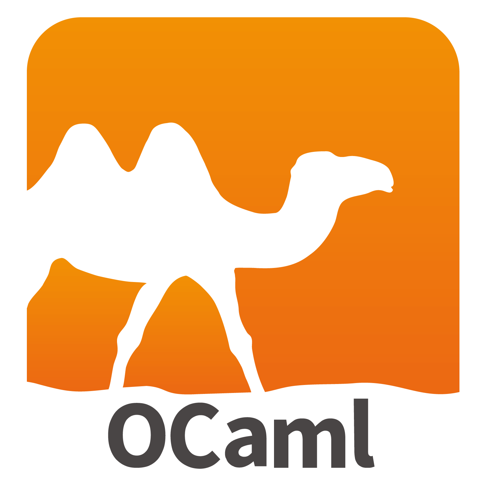
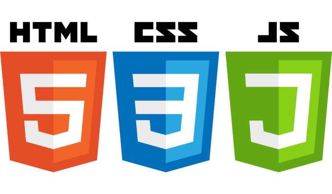

- Intermediate knowledge of Python, Java, C, OCaml, HTML, CSS, and Golang coding
- Proficient in Google Suite
- Proficient in MacOS and Windows OS
- Introductory knowledge of Adobe Photoshop
- Organized, efficient, productive
Technical Knowledge

